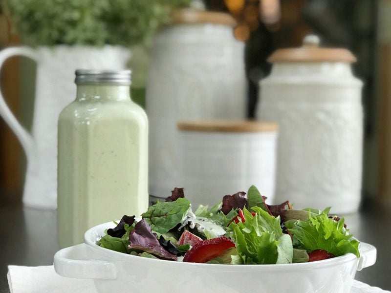

Creamy Sweet Basil Dressing
Today’s dressing is pale green, light, creamy, with a hint of sweet, basil. The key is, fresh sweet basil. To me, dried basil just doesn’t do basil justice. Fresh is always the best! I used 1/3 of a cup of it today, but you can always kick it up a notch if you want the flavor to punch through a tad stronger. It is all about adjusting things that make your taste buds go on holiday.

Although more than 60 varieties of basil have been identified, they all fall into one of three main types: sweet, purple, or bush. Each one offers up a subtle difference in taste; hints of lemon, anise, and cinnamon are just some of the flavors, the differences are important, that way you can know how one might modify and enhance a recipe.
Out of all of them, Sweet Basil seems to be is the most common one used in the U.S. It’s typically all I find in our local grocery stores. It has smooth, bright green leaves with a floral and delicate aroma. Remember that if you use a different variety of basil, it will affect the end flavor. If you like to grow herbs in your home, basil plants are easy to maintain indoors and outside (weather conditions providing). To keep your little crop going, be sure to snip off budding heads whenever they appear and underneath the base of a leaf near the bottom on spindly stems to keep your plant full, with new branches appearing.
I had to giggle by the time I was finished creating this recipe… I had enough to feed a small village. I don’t know what it is about me, but I tend to make large batches of food. I do it unconsciously, but it always proves to be useful. It’s become a habit to prepare one recipe and then morph the leftovers into many other creations.
One Recipe, Many Options
- Add 1 cup water to create a dip for fresh sliced veggies, coat zucchini noodles for a side dish, massage kale pieces into it and make Creamy Basil Kale chips, or use a sandwich spread. You can even take the dip and add dried shredded coconut until it creates a thick batter which can be spread out, dehydrated and scored into crackers.
- Add 2 -3 cups of water to create a thick or thin salad dressing.
Health Benefits
- Vitamin K which is essential for blood clotting. *Caution to those on blood thinner medications.*
- Vitamin A, which contains beta-carotene, powerful antioxidants that protect the cells lining, and numerous body structures, including the blood vessels, from free radical damage. This helps prevent cholesterol in blood from oxidizing, helping to prevent atherosclerosis, heart attacks, and stroke. *Remember, Vitamin A is a fat-soluble vitamin, so it’s best to consume it with fat for better absorption.
- Other vitamins and minerals in basil include iron, calcium, manganese, magnesium, vitamin C, and potassium.
- Basil also has antibacterial properties and contains DNA-protecting flavonoids. Source
It never ceases to amaze me as to how much our food can really be our medicine!
 Ingredients:
Ingredients:
yields 6 cups
- 2 cups (340 g) cashews, soaked 2 + hours
- 3 cups (692 g) water
- 1/2 cup (107 g) raw apple cider vinegar
- 1/3 cup (12 g) packed fresh sweet basil leaves
- 2 Tbsp (20 g) sliced green onion
- 1 Tbsp (18 g) honey or liquid sweetener
- 2 Tbsp (30) lemon juice
- 1 tsp (5 g) Himalayan pink salt
- 1 tsp (3 g) garlic powder
- 1/2 tsp (1 g) fresh black pepper
Preparation:
- After soaking the cashews, drain and rinse them. Do not use the soak water in the recipe.
- In a high-powered blender combine the water, vinegar, basil leaves, onion, sweetener, lemon juice, salt, garlic, black pepper, and cashews. Blend until creamy.
- Depending on the blender this can take 1-5 minutes.
- Stop the machine periodically and test for grittiness.
- Once smooth and no grit is felt, pour into a mason jar, place the lid on and store in the fridge for 5-7 days.
- If you don’t have cashews, you can also use sunflower seeds or macadamia nuts.
- Use less water if you want a thicker dressing. You can always more to thin if desired.
- If any separation takes place in the jar while sitting in the fridge, just give it a good shake or stir it before using.
© AmieSue.com